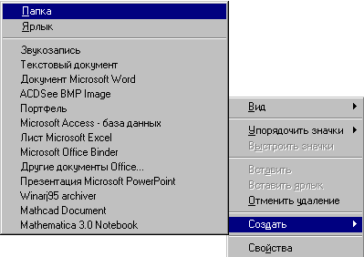
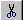

1. Выделение объектов
Под объектами здесь понимаются файлы, папки, значки приложений и ярлыков.
Перед выделением группы объектов удобно перейти к представлению объектов в виде списка или
таблицы.
|
Чтобы выделить |
Действия |
|
Один объект |
Щелкните на нем левой кнопкой мыши |
|
Несколько объектов |
Поочередно щелкните на них левой кнопкой мыши, удерживая нажатой кнопку CTRL |
|
Несколько подряд идущих объектов |
Щелкните мышью на первом из них и, удерживая нажатой кнопку SHIFT, щелкните на последнем. |
2. Создание папки
- Перейдите в ту папку, внутри которой должна быть создана новая папка.
- Щелкните на свободном месте правой кнопкой мыши.
- Из контекстного меню выберите команду Создать и подкоманду Папка:

- На экране появится новая папка с именем, состоящим из дефисов:
- Введите нужное имя и нажмите ENTER.
3. Переименование папок и файлов
Для того, чтобы изменить имя папки или файла, воспользуйтесь командой Переименовать
контекстного меню объекта.
4. Копирование файлов или папок
- Выделите в папке "Мой компьютер" или в окне проводника нужный файл или папку.
- Для копирования выделенных объектов в буфер выполните одно из следующих действий:
- Выберите в меню Правка команду Копировать.
- Щелкните кнопку Копировать
панели инструментов. Если панель инструментов не видна, включите ее, выбрав в меню
Вид строку Панель инструментов.
- Выберите пункт Копировать из контекстного меню.
- Нажмите комбинацию клавиш CTRL+C.
- Откройте папку, в которую следует переместить объект.
- Для вставки объекта выполните одно из следующих действий:
- Выберите в меню Правка команду Вставить.
- Щелкните кнопку Вставить панели
инструментов. Если панель инструментов не видна, включите ее, выбрав в меню Вид
строку Панель инструментов.
- Выберите пункт Вставить из контекстного меню.
- Нажмите комбинацию клавиш CTRL+V.
5. Перемещение файлов или папок
- Выделите в папке "Мой компьютер" или в окне проводника нужный файл или папку.
- Для вырезания выделенных объектов в буфер выполните одно из следующих действий:
- Выберите в меню Правка команду Вырезать.
- Щелкните кнопку Вырезать 
панели инструментов. Если панель инструментов не видна, включите ее, выбрав в меню
Вид строку Панель инструментов.
- Выберите пункт Вырезать из контекстного меню.
- Нажмите комбинацию клавиш CTRL+X.
- Откройте папку, в которую следует переместить объект.
- Для вставки объекта выполните одно из следующих действий:
- Выберите в меню Правка команду Вставить.
- Щелкните кнопку Вставить
панели инструментов. Если панель инструментов не видна, включите ее, выбрав в меню
Вид строку Панель инструментов.
- Выберите пункт Вставить из контекстного меню.
- Нажмите комбинацию клавиш CTRL+V.
6. Перетаскивание с помощью мыши
Копирование, перемещение и печать документов и файлов можно производить не только с помощью
команд меню, но и путем перетаскивания мышью.
|
Желаемый результат |
Действия в Windows’95 |
Действия в Windows NT |
|
Скопировать
объект или группу выделенных объектов |
Перетащить на значок папки назначения, удерживая нажатой левую кнопку мыши |
Перетащить на значок папки назначения, удерживая нажатой левую кнопку мыши и клавишу CTRL |
|
Переместить
объект или группу выделенных объектов |
|
Перетащить на значок папки назначения, удерживая нажатой левую кнопку мыши |
|
Печать документа |
Перетащить значок документа на значок принтера |
Перетащить значок документа на значок принтера |
|
Удаление |
Перетащить значок документа на значок корзины |
Перетащить значок документа на значок корзины |
Если при перетаскивании объекта удерживать нажатой правую кнопку мыши, то на экране появится
контекстное меню копирования, из которого можно выбрать нужное действие.
7. Копирование файла или папки на гибкий диск
- Вставьте гибкий диск в дисковод.
- Выделите в папке "Мой компьютер" или в окне Проводника нужные файлы или папки.
- Выберите в меню Файл или в контекстном меню объекта команду Отправить и
укажите диск, на который следует произвести копирование.
8. Удаление объектов в Корзину
Удаленные объекты помещаются в Корзину. Корзина представляет собой папку, в которой
хранятся удаленные папки и файлы. Она занимает некоторое пространство на жестком диске.
Объем этого пространства можно изменить, воспользовавшись пунктом Свойства контекстного
меню Корзины. Когда Корзина наполняется, из нее по мере необходимости удаляется
объекты, помещенные первыми.
Случайно удаленные документы можно снова извлечь из Корзины, воспользовавшись пунктом
Восстановить ее контекстного меню. Восстановленные файлы помещаются в те же папки, из
которых они были ранее удалены. При необходимости восстанавливаются и сами папки.
Время от времени Корзину полезно чистить. Для этого воспользуйтесь пунктом
Очистить корзину ее контекстного меню.
Для удаления объектов в корзину выполните следующие действия:
- Выделите удаляемые объекты.
- Для удаления выделенных объектов в корзину выполните одно из следующих действий:
- Выберите в меню Файл команду Удалить.
- Щелкните кнопку Удалить панели инструментов.
Если панель инструментов не видна, включите ее, выбрав в меню Вид строку
Панель инструментов.
- Выберите пункт Удалить из контекстного меню.
- Нажмите клавишу DEL.
9. Отмена действий
Нажмите кнопку Отменить  панели инструментов. Если панель инструментов не видна, включите ее, выбрав в меню Вид
строку Панель инструментов.
панели инструментов. Если панель инструментов не видна, включите ее, выбрав в меню Вид
строку Панель инструментов.